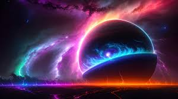

Исследования космоса
Космос — это безграничное пространство, которое привлекает учёных со всего мира.
Ключевые даты
| Год | Событие |
|---|---|
| 1957 | Первый искусственный спутник |
| 1961 | Первый полёт человека в космос |
Основные термины
- Астрономия
- Наука, изучающая космос и небесные тела.
- Гравитация
- Сила, притягивающая объекты друг к другу.
Ключевые темы исследований
- История космических исследований
- Главные открытия человечества
- Будущее космических миссий
- Звезды
- Планеты
- Галактики